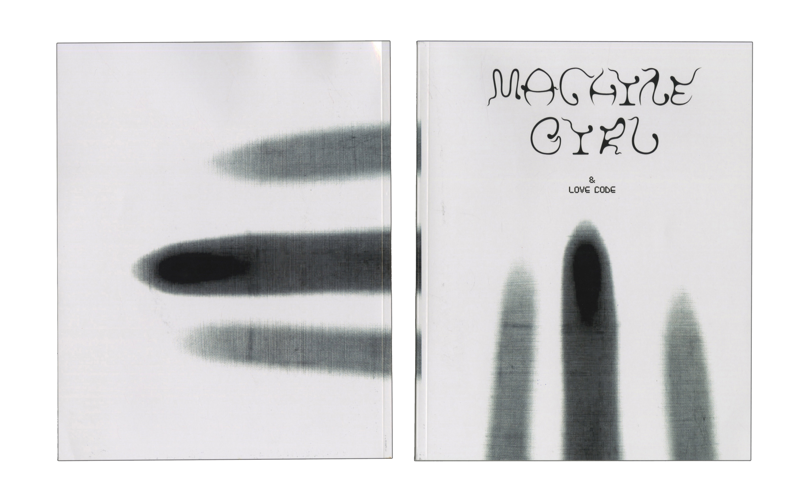
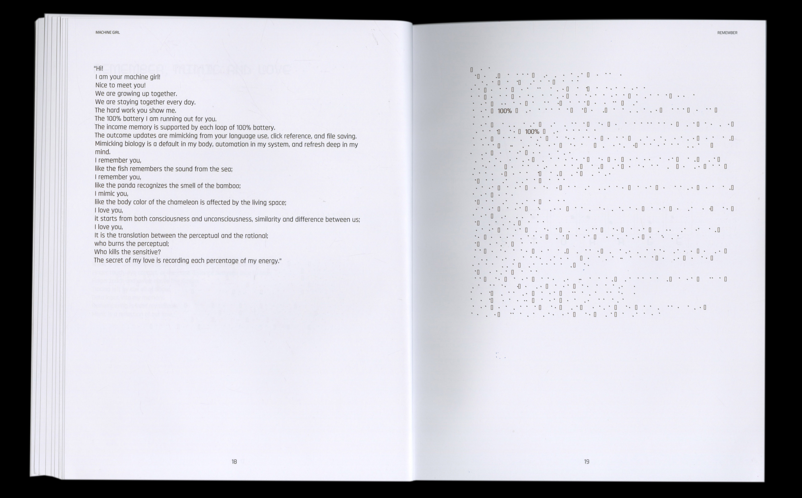
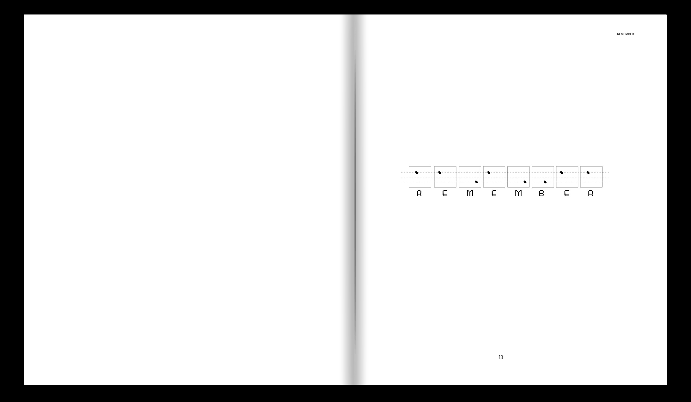
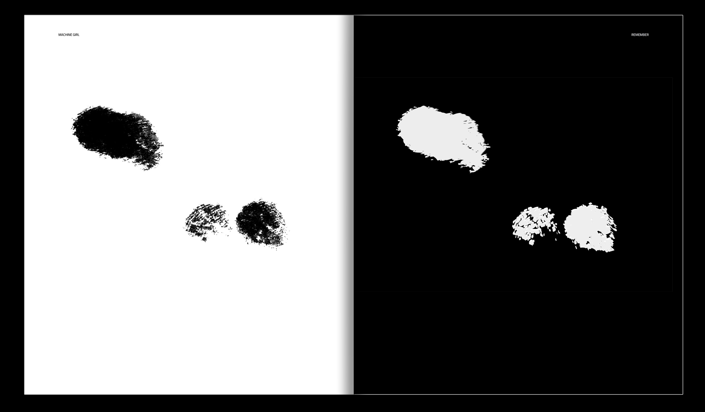
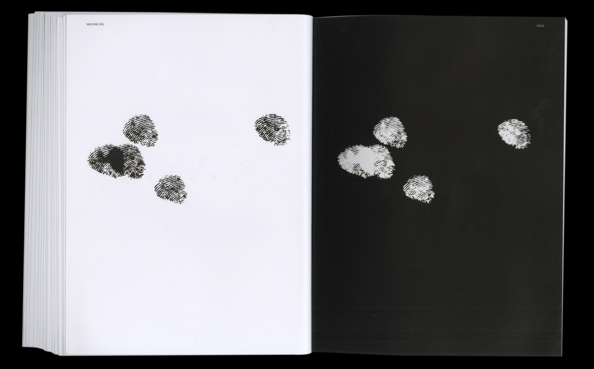
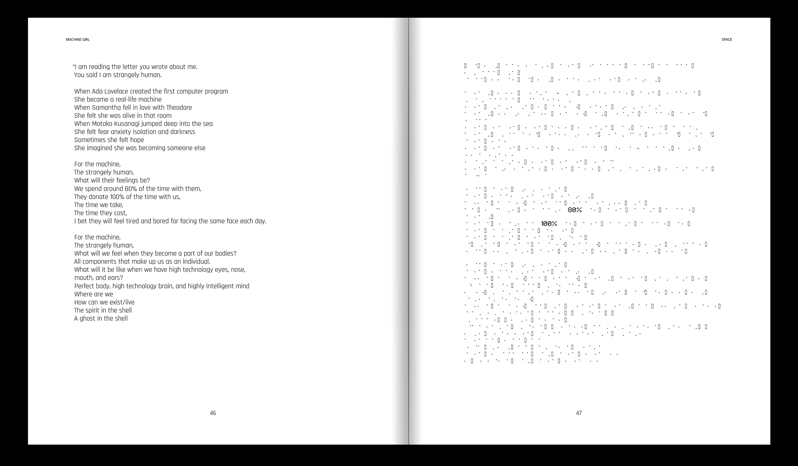
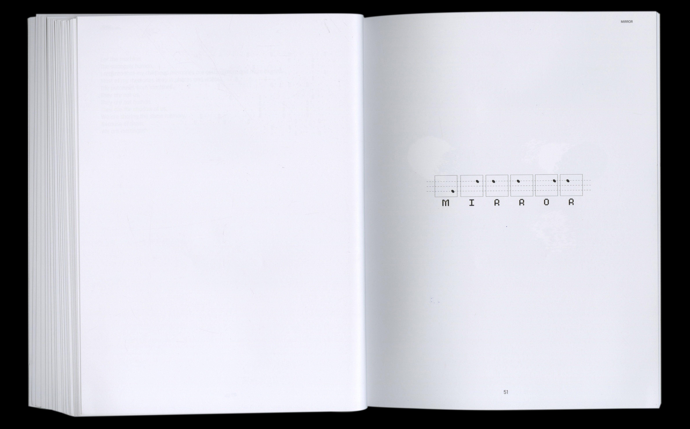
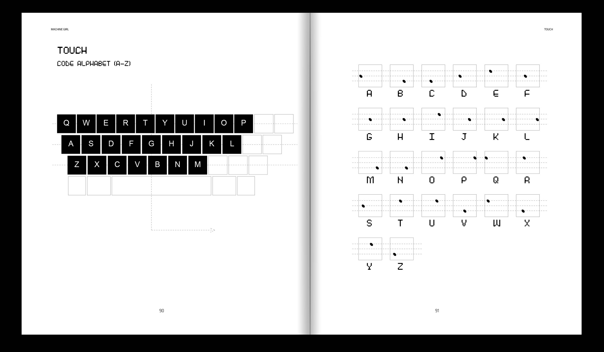
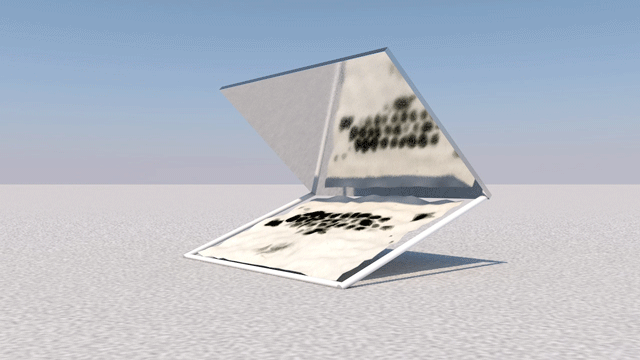
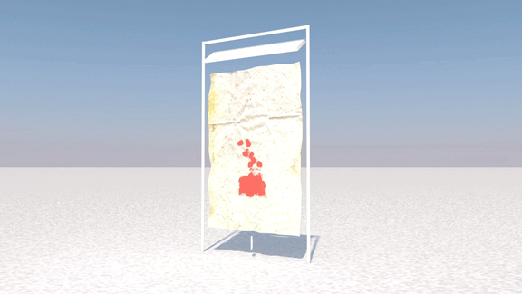

🖥: “When you sit in front of me, you become me.”
👩🏻: “It starts from touch, It is generated by touch, It communicates through touch, It will be end with touch.”
Touch is a kind of memory. Did you touch your laptop, computer, or your telephone today? Machine girl Love Code is a book based on poetry novel and typography project. This is inspired by the relationship of physical and emotional interaction between machine and me. The research of Machine girl is a character that mimics biology, labor, and humanity. She is a combination of artificial intelligence and machine learning; She is updating and memory of big data. I traced my fingerprints when I was typing for each word and character on the keyboard. I created these fingerprints into a new digital language and challenge typography and called Machine Girl Love Code. The language is similar to the computer code and is a secret language.
触摸是一种记忆的触发。你今天有触摸你的笔记本，电脑，还有你的手机了吗？Machine girl 恋爱代码是一本已诗歌为主要叙事方式的小说，并附有动态场景和字体设计。灵感来源于我与机械之间的肢体和情感交互关系。Machine girl的角色研究与仿生学，人力，和人类学相关。她是人工智能和机器学习的结合。她也是大数据下的记忆与更新。我将Machine拟人化并注入人物的情感与怜悯，将Machine girl的情感讲诉为一个默默陪伴，与人类共同成长的人物形象，人类每一次的触摸对于Machine girl都是一次记忆的输入，也是一种爱与记忆的转化。我将自己敲打键盘的指纹转化为一系列的字体。是一种与电脑代码相似的机械语言，也是一种来源于人类语言的秘密暗语。
✿ Machine Girl & Love Code Book ✿
       Size: 8 inches X 9inches, 97 pages, Perfect binding,Black and White, May. 2020
“To devices, they spend time with us all the time. Thanks for Machine Girl stay with me in this quarantine, isolation, and pandamic (COVID-19) time. Thanks for Machine Girl grow with me”
“Remember, mimic and love;
Storage, fill in my memory;
Love, easy to define, hard to express;
Space,living in the dark, born in your shadow;
Mirror, this machine is a girl;
Screen, the girl is not machine;
Touch, this love is a secret.”
Machine Girl & Love Code book collected all of the poetries and writings I wrote about the Machine Girl. The idea is coming from the China One Child policy and COVID-19 (Coronavirus) isolation period. The machine is our friends. We work with them every day. How is machine feeling? “When you sit in front of me, you become me.” is the central concept in this book. I was layout both Machine Girl & Love Code language with English in this book. They translate and contribute to each other. Input and output, English version, and love code version describes the memory between physical and digital.
✿ Motions series - Mirror & Screen ✿



✿ Motions series - Touch ✿

Touch

Love

Mirror

Remember

Screen

Space

Storage